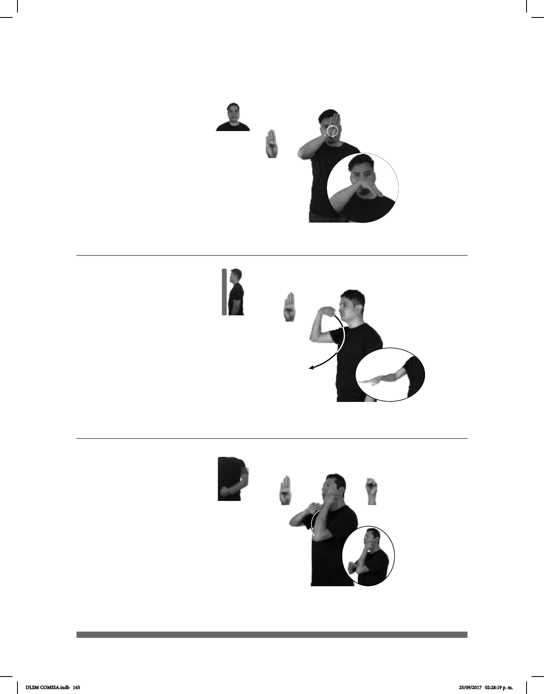

163
Seña: SM
B-P.1
Palma hacia abajo.
A la altura de la nariz.
La mano se mueve
formando círculos.
Cabeza
adelantada.
Simula la trompa de un
elefante.
sust. m. Mamífero
herbívoro, el mayor de los
cuadrúpedos, de piel dura y rugosa, trompa
móvil con la que puede coger objetos y dos
grandes dientes curvos que llamamos
colmillos y le sirven para defenderse.
(B-P 157)
ÁFRICA
allá
MUCHOS ELEFANTE HABER
Hay muchos elefantes en África.
(B-P 158)
ÁFRICA
allá
MUCHOS ELEFANTE HABER
Hay elefantes en África.
Seña: SM
B-P.1
Palma hacia abajo.
De la cara a la cintura.
La mano se mueve
formando un arco hacia enfrente
Cabeza adelan-
tada.
Simula la trompa de un
elefante.
sust. m. Mamífero
herbívoro, el mayor de los cuadrúpedos,
de piel dura y rugosa, trompa móvil con
la que puede coger objetos y dos grandes
dientes curvos que llamamos colmillos y
le sirven para defenderse.
(B-P 159)
pos-MI HERMANO+MUJER YA EMBARAZADA
Mi hermana está embarazada.
Seña: SB
MD B-P.1, MB S.1
MD la palma inicia
hacia abajo y termina hacia arriba.
MB palma hacia adentro.
La MD inicia sobre la
muñeca de MB y termina sobre su
codo. MB a la altura de la barbilla.
La MD se mueve
formando un arco.
adj. Que espera un hijo
o una cría; que está preñada o en
cinta.
DLSM COMISA.indb 163 25/09/2017 02:28:19 p. m.